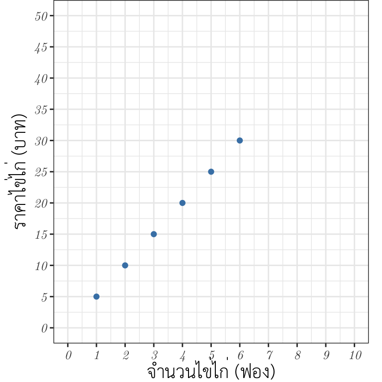
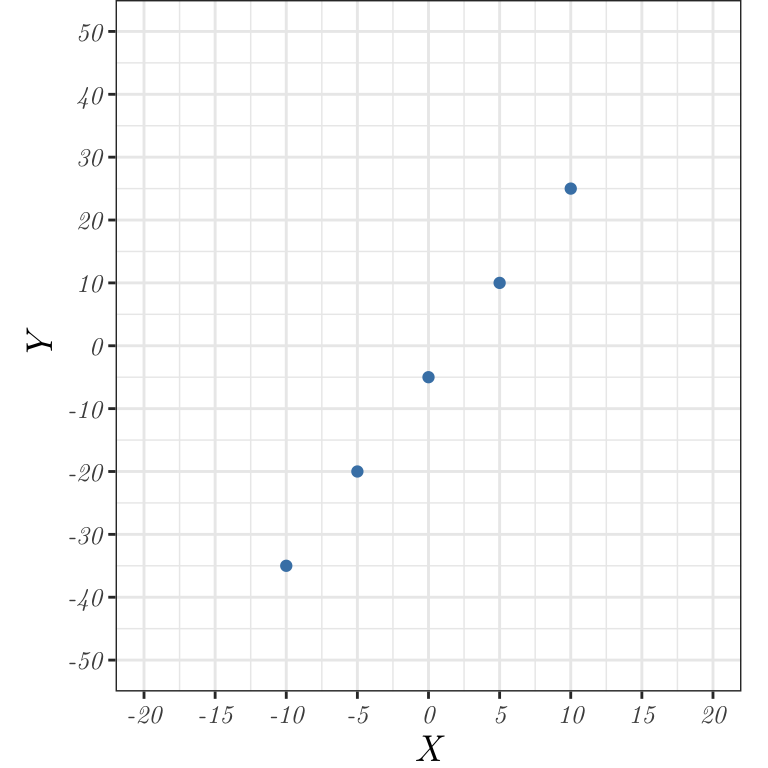
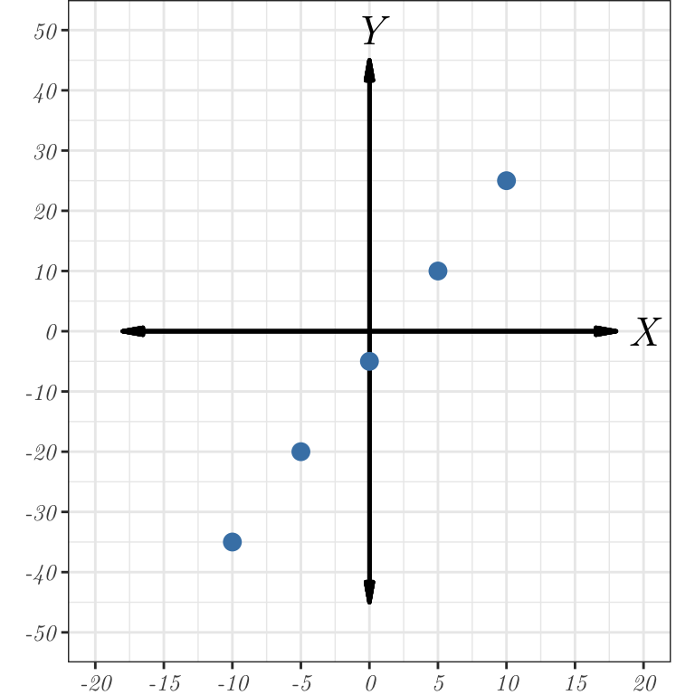

flowchart TD A[$$Ax+By+C=0$$]
คู่อันดับและกราฟ (ต่อ)
กราฟและการนำกราฟไปใช้
ความสัมพันธ์เชิงเส้น
ในหัวข้อที่ผ่านมา เราเห็นการเขียนแสดงความสัมพันธ์ระหว่างปริมาณสองปริมาณโดยใช้กราฟบนระนาบในระบบพิกัดฉากมาแล้ว
กราฟเหล่านั้นมีทั้งกราฟที่เป็นแนวเส้นตรงและไม่ป็นแนวเส้นตรง
ต่อไปนี้เราจะศึกษาเพิ่มเติมเกี่ยวกับกราฟที่เป็นแนวเส้นตรง
กล่าวคือ เป็นเส้นตรง ส่วนหนึ่งของเส้นตรง หรือเป็นจุดที่เรียงอยู่ในแนวเส้นตรงเดียวกัน
จากสถานการณ์ของเรื่องการซื้อขายไข่ไก่
หรือปริมาณน้ำมันกับราคาน้ำมัน
ทั้งสองสถานการณ์นี้เป็นตัวอย่างของความสัมพันธ์ของปริมาณสองปริมาณที่มีกราฟอยู่ในแนวเส้นตรงเดียวกัน
เราเรียกความสัมพันธ์ในลักษณะนี้ว่า ความสัมพันธ์เชิงเส้น (linear relation)
ให้นักเรียนพิจารณาความสัมพันธ์ต่อไปนี้
เมื่อมีการกำหนดตัวแปรแทนจำนวนต่าง ๆ
เราสามารถเขียนสมการได้ ดังนี้
เมื่อกำหนดค่า \(x\) บางค่า และหาค่า \(y\) ที่ทำให้สมการ \(3x-y=5\) เป็นจริง จะได้ค่า \(x\) และ \(y\) ดังตารางนี้
แต่ก่อนที่เราจะได้ตาราง อาจารย์อยากให้นักเรียนช่วยคำนวณหาของ \(y\) เมื่ออาจารย์กำหนดค่าของ \(x\) มาให้นะ
เมื่อกำหนดให้ \(x=-10\) จะได้ \(y\) =
เมื่อกำหนดให้ \(x=-5\) จะได้ \(y\) =
เมื่อกำหนดให้ \(x=0\) จะได้ \(y\) =
เมื่อกำหนดให้ \(x=5\) จะได้ \(y\) =
เมื่อกำหนดให้ \(x=10\) จะได้ \(y\) =
จากการกำหนดค่าของ \(x\) และคำนวณค่าของ \(y\) เราจะได้ตารางเป็นดังนี้่
แต่จากบทเรียนในครั้ง อาจารย์จะเขียนตารางในลักษณะแบบนี้แทนนะครับ
ซึ่งในแต่ละค่าของ \(x\) และ \(y\) ทำให้เราได้คู่อันดับ ดังนี้
เมื่อเรานำคู่อันดับที่ได้มาเขียนกราฟ จะได้กราฟ ดังนี้
เพื่อให้นักเรียนมองเห็นภาพได้ชัดเจนยิ่งขึ้น
อาจารย์จะเพิ่มเติมแกน \(X\) และแกน \(Y\) ลงในรูปให้นะครับ
จะเห็นว่า กราฟที่ได้เป็นจุดที่เรียงอยู่ในแนวเส้นตรงเดียวกัน
ความสัมพันธ์ของจำนวนเต็มทั้งสองนี้จึงเป็นความสัมพันธ์เชิงเส้น
และสมการของความสัมพันธ์เชิงเส้นที่แสดงความเกี่ยวข้องระหว่างปริมาณสองปริมาณ
จะเรียกว่า สมการเชิงเส้นสองตัวแปร (two-variable linear equation)
ลักษณะสำคัญของสมการเชิงเส้นสองตัวแปร \(Ax+By+C=0\) คือ
มีตัวแปรสองตัว
และต้องไม่มีการคูณกันของตัวแปร
เลขชี้กำลังของตัวแปรแต่ละตัวต้องเป็นหนึ่ง
\(A\) และ \(B\) ตัวใดตัวหนึ่งเป็นศูนย์ได้ แต่ต้องไม่เป็นศูนย์พร้อมกัน
เมื่อนักเรียนรู้จักสมการเชิงเส้นสองตัวแปรแล้ว
นักเรียนช่วยตอบคำถามให้อาจารย์หน่อยนะ
ว่าสมการที่กำหนดให้ต่อไปนี้ เป็นสมการเชิงเส้นสองตัวแปร หรือไม่
เมื่ออาจารย์กำหนดตัวอย่างของสมการมาดังนี้
\(5x+y+3=0\) สมการเชิงเส้นสองตัวแปร
\(y-1.5x-3=0\) สมการเชิงเส้นสองตัวแปร
\(x+xy=1\) สมการเชิงเส้นสองตัวแปร
\(x^2-2x+1=y\) สมการเชิงเส้นสองตัวแปร
\(y=-4\) สมการเชิงเส้นสองตัวแปร
กรณีที่กำหนดสมการเชิงเส้นสองตัวแปรในรูปแบบนี้
ถ้าไม่ระบุเงื่อนไขของ \(x\) และ \(y\)
ให้ถือว่า \(x\) และ \(y\) แทนจำนวนใด ๆ และกราฟของสมการเชิงเส้นสองตัวแปรนี้
จะเป็นเส้นตรงที่เรียกว่า กราฟเส้นตรง
ในกรณีทั่ว ๆ ไป
เราสามารถเขียนกราฟของสมการนี้ เมื่อ \(B\not= 0\)
โดยจัดสมการให้อยู่ในรูปที่สะดวกต่อการแทนค่า \(x\) เพื่อหาค่า \(y\)
ได้ดังรูปนี้
หรือกล่าวโดยสรุป
เช่น
สามารถจัดรูปได้ดังนี้
เราต้องการให้สัมประสิทธิ์หน้าตัว \(y\) เป็นบวกจึงได้
จากนั้น ต้องการให้ \(y\) อยู่ตัวเดียว จึงได้
หรือบางครั้งเราเขียน


“สามเท่าของจำนวนเต็มจำนวนหนึ่ง
มากกว่าจำนวนเต็มอีกจำนวนหนึ่งอยู่ห้า”
—
ถ้าให้
\(x\) แทนจำนวนเต็มจำนวนหนึ่ง
\(y\) แทนจำนวนเต็มอีกจำนวนหนึ่ง
—
เขียนข้อความข้างต้นในรูปสมการได้เป็น
\(3x-y=5\)
มากกว่าจำนวนเต็มอีกจำนวนหนึ่งอยู่ห้า”
—
ถ้าให้
\(x\) แทนจำนวนเต็มจำนวนหนึ่ง
\(y\) แทนจำนวนเต็มอีกจำนวนหนึ่ง
—
เขียนข้อความข้างต้นในรูปสมการได้เป็น
\(3x-y=5\)
\(3x-y=5\)
| เมื่อ \(3x-y=5\) |
|---|
| \(x\) | \(-10\) | \(-5\) | \(0\) | \(5\) | \(10\) |
| \(y\) | \(-35\) | \(-20\) | \(-5\) | \(10\) | \(25\) |


สมการเชิงเส้นสองตัวแปร
เป็นสมการที่เขียนอยู่ในรูปทั่วไปได้เป็น
\(Ax+By+C=0\)
เมื่อ \(x,\ y\) เป็นตัวแปร
\(A,\ B\) และ \(C\) เป็นค่าคงตัว
โดยที่ \(A\) และ \(B\) ไม่เป็นศูนย์พร้อมกัน
เป็นสมการที่เขียนอยู่ในรูปทั่วไปได้เป็น
\(Ax+By+C=0\)
เมื่อ \(x,\ y\) เป็นตัวแปร
\(A,\ B\) และ \(C\) เป็นค่าคงตัว
โดยที่ \(A\) และ \(B\) ไม่เป็นศูนย์พร้อมกัน
1. \(5x+y+3=0\)
2. \(y-1.5x-3=0\)
3. \(x+xy=1\)
4. \(x^2-2x+1=y\)
5. \(y=-4\)
2. \(y-1.5x-3=0\)
3. \(x+xy=1\)
4. \(x^2-2x+1=y\)
5. \(y=-4\)
flowchart TD A[$$y=mx+b$$]
flowchart TD A[$$Ax+By+C=0$$] B[$$y=mx+b$$] A -- จัดรูป --> B
\(2x-y=3\)
\[\begin{align} 2x-y &= 3\\ 2x &= 3+y\\ \end{align}\]
\[\begin{align} 2x-y &= 3\\ 2x &= 3+y\\ 2x-3 &= y\\ \end{align}\]
\[\begin{align} 2x-y &= 3\\ 2x &= 3+y\\ y &= 2x-3\\ \end{align}\]